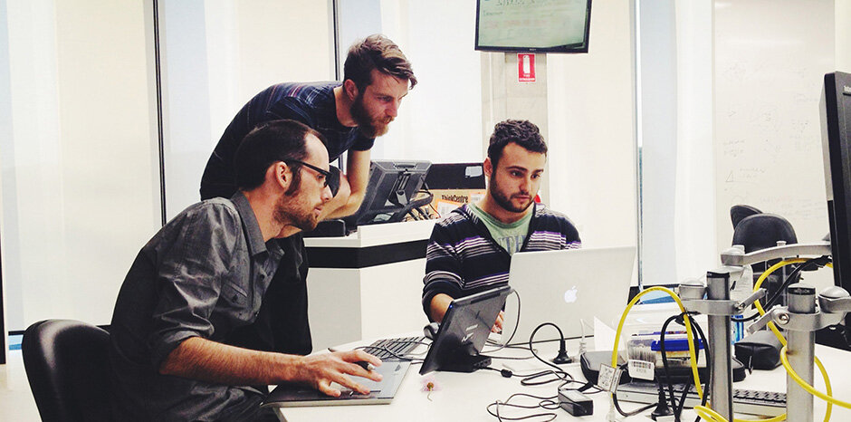

Currently, my dream job is put simply,
to be an indie game developer. I've
recently picked up game development and
see it as an amazing thing, and really
want to turn it from a hobby into a
job. To be specific I want my own
little team of people that can all
work together to produce the games
we envision. A good example of this
is Team Cherry
, a small indie studio that
makes amazing games. It consists of a
game developer. Aka the person that creates
levels, ideas, and story. An artist that
creates the assets and art for the game,
a programmer that makes the art playable,
and lastly a music producer that is actually
my favourite musician. This person brings
the life of the game to life by making
attractive music, interesting sound effects,
and much more. So, specifically I want
to be the person that programs the game,
and creates the ideas, levels, and more.